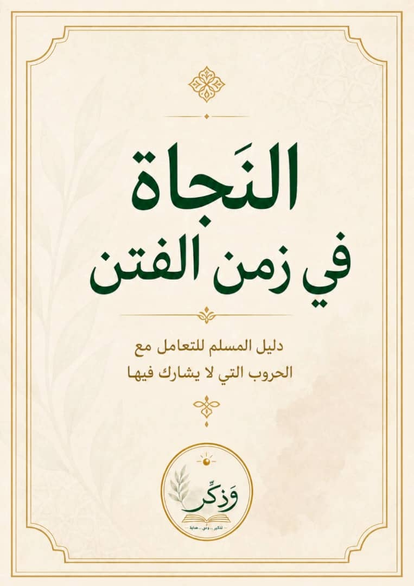

Surviving in times of chaos.
A Muslim's guide to dealing with wars they're not involved in.
- Chapter One: The First Shock: You Are Inside the Fitnah Without Realizing It
- Chapter Two: Media and Truth: How You Get Fooled Without Knowing
- Chapter Three: The Power of Silence: When Staying Quiet Becomes Worship
- Chapter Four: Your Real Position: You Are Not Where You Think You Are
- Chapter Five: Understanding Wars: Not Every Battle Is the Same
- Chapter Six: Your Real Duty: What Should You Actually Do?
- Chapter Seven: Protecting Your Iman: How Not to Lose Yourself
- Chapter Eight: Dua: Between Action and False Reliance
- Chapter Nine: Deadly Mistakes: What Ruins You Without You Noticing
- Chapter Ten: Real Benefit: How to Make an Honest Impact
- Chapter Eleven: Conclusion: Surviving Matters More Than Understanding Everything
Introduction
We live in a time where wars no longer feel far away from us. We see them every day, hear about them every hour, and sometimes feel like we are living inside them, even while we have not left our own places.
The news reaches us. The scenes follow us. And, directly or indirectly, we are asked to take a position. So we get angry, we get affected, and we speak. But we rarely stop and ask: is this really the role we are supposed to live?
This book is not about the battlefield. It is not about the details of wars or political analysis. It is about you. Even when you are not a direct part of the war, it still reaches you: your heart, your mind, and your tongue.
This book does not focus on one specific cause or one specific war. It is not trying to make any cause smaller, and it is not ignoring the suffering of any people. Actually, it starts from the idea that every just cause deserves honest awareness.
But this book focuses on another side: how should a Muslim deal with wars he is not directly part of? Wars he does not control, cannot change by his own decision, but still gets affected by every day.
Because the problem is not always the war itself. Sometimes the problem is how we deal with it. Many people today speak more than they understand, get affected more than they can handle, and share things without realizing what they are doing. Then they fall into spreading lies, wronging others, or losing themselves, while thinking they are "supporting the truth."
What will you find here? You will not find political analysis, military details, or answers to every question. But you will find a way to think, a simple scale, and boundaries that protect you in a time where voices are loud and understanding is rare.
One last word before you start: this book is not asking you to become a hero or to change the world overnight. It is asking something simpler, and harder: do not get lost. Try to come out of this time with a sound heart, an awake mind, and a soul that did not get dragged away.
If you found yourself in these words, then this book is for you.